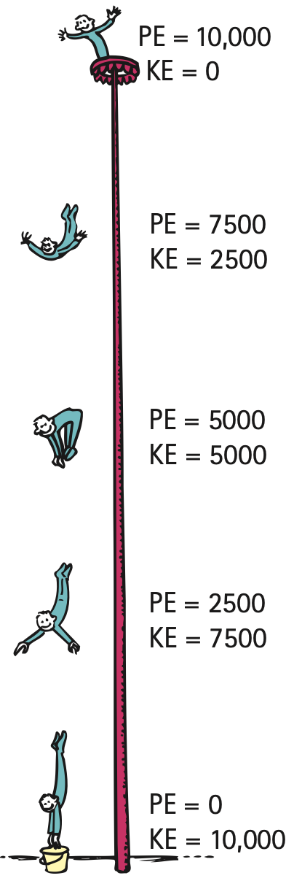

Conservation of Energy
Mathematical idea: Energy accounting tracks changes among forms without requiring energy to be created or destroyed.
Use source images, short reading cycles, discussion, and applications to connect the physical situation to a model you can explain.
Learning Target
Students will apply the work-energy theorem and conservation of energy to explain motion, stopping distance, energy transformations, and mechanical systems.
I can statements
- I can explain that work changes energy.
- I can use the work-energy theorem to connect net work and change in kinetic energy.
- I can explain how potential energy transforms into kinetic energy and thermal energy.
- I can explain why energy is conserved even when mechanical energy seems to “disappear.”
- I can analyze energy bar charts or diagrams for roller coasters, pendulums, ramps, and collisions.
Vocabulary
These are words you will see in this section. Do not define them yet.
- work-energy theorem
- net work
- conservation of energy
- energy transformation
- thermal energy
- mechanical energy
- system
- friction
Use the preview activity to decide which words you already know, recognize, or do not know yet. Watch for these words in bold when they are first introduced or defined in the reading.
Preview: Skim Before You Read
Directions
Before reading closely, skim the vocabulary list and the section. Look at titles, headings, bold words, pictures, captions, diagrams, tables, and formulas. Do not try to understand everything yet. Your job is to notice what already looks familiar and make predictions about what this section may explain.
Step 1 — Sort the vocabulary. Write each vocabulary word in the column that best matches what you know right now. You may move a word later.
| Know for sure | Recognize | Don’t know yet |
|---|---|---|
Step 2 — Skim the section. Record what catches your attention before you read closely.
| What I noticed | |
|---|---|
| What I predict | |
| What I wonder |
Content: Read, Look, Annotate, Apply
Directions
Read in short chunks. Annotate the prose and the figures together: underline evidence, circle or highlight bold vocabulary, label arrows or measured features, connect a sentence to an image, and write short questions or connections in the margins.
Reading 1: Net work changes kinetic energy
The work-energy theorem connects forces and motion by stating that net work on an object changes its kinetic energy. The assessment plan asks for this connection conceptually, so the key question is whether the combined forces transfer energy into or out of the object’s motion.
net work means the work associated with the net force. A forward push can add kinetic energy while friction removes some. If the effects balance so the net force is zero, the kinetic energy does not change.

Image read: Annotate the quantities, directions, or before-and-after evidence that the reading asks you to track.
The bicycle skid image shows a moving system losing kinetic energy as friction acts. The energy has not vanished. The tire and floor warm, showing energy transferred into thermal energy.
This is why stopping distance grows strongly with speed: a faster object has much more kinetic energy, so more work must be done by braking forces to reduce its kinetic energy to zero.
Stop and Discuss
- Locate the evidence of heating in the infrared image. Connect it to the decrease in the bicycle’s kinetic energy.
- Explain why saying “friction destroyed the energy” is inconsistent with the image.
Teacher support: Listen for evidence tied to the reading or figure, not just a vocabulary definition. Ask students to name what changes, what stays the same, and why.
Example 1: Where did the motion energy go?
A bicycle skids to rest and its tire warms. Use the work-energy idea to explain the motion change and identify where energy is transferred.
- Show the model, relationship, or comparison that answers the question.
- Explain what the result means physically.
Teacher answer: Model the reasoning explicitly. Check units/direction when calculation is used, and require a sentence that interprets the result rather than stopping at arithmetic.
You Try It 1: Where did the motion energy go?
A sliding box slows on a rough floor. Explain how net work changes its kinetic energy and where some energy goes.
- Use the same physics idea with this new situation.
- Explain how your evidence or calculation supports the conclusion.
Teacher answer: Expect the same core relationship as the example with the new context. Use errors to diagnose whether the student is confusing the quantity itself with the interaction or transformation that changes it.
Reading 2: Energy transforms but total energy is conserved
The law of conservation of energy says energy cannot be created or destroyed; it can be transferred or transformed. An energy transformation is a change from one energy form to another.
For a falling or descending object, gravitational potential energy can decrease while kinetic energy increases. The circus diver figure makes this exchange visible: as height decreases, motion increases while the total energy accounting remains constant in the ideal model.

Image read: Annotate the quantities, directions, or before-and-after evidence that the reading asks you to track.
With real friction or air resistance, mechanical energy can decrease because some energy becomes thermal energy, sound, deformation, or other forms. Total energy is still conserved when the system is defined broadly enough to include those destinations.
The most useful question is not “where did the energy go?” as if it vanished, but “what form is it in now, and where is it located?”
Stop and Discuss
- Follow the diver downward and describe the PE-to-KE pattern.
- Identify what additional energy form would need to be tracked if air resistance were important.
Teacher support: Listen for evidence tied to the reading or figure, not just a vocabulary definition. Ask students to name what changes, what stays the same, and why.
Example 2: Energy account
A skateboarder rolls down a ramp. Describe the main energy transformation if friction is negligible, then revise the explanation if friction warms the wheels and ramp.
- Show the model, relationship, or comparison that answers the question.
- Explain what the result means physically.
Teacher answer: Model the reasoning explicitly. Check units/direction when calculation is used, and require a sentence that interprets the result rather than stopping at arithmetic.
You Try It 2: Energy account
A ball rolls down a hill. Explain the PE and KE changes, then include thermal energy if friction is significant.
- Use the same physics idea with this new situation.
- Explain how your evidence or calculation supports the conclusion.
Teacher answer: Expect the same core relationship as the example with the new context. Use errors to diagnose whether the student is confusing the quantity itself with the interaction or transformation that changes it.
Reading 3: Systems transfer energy
A system boundary helps decide whether we describe energy as transforming inside the system or transferring across its boundary. The San Francisco cable-car example shows one car losing gravitational potential energy while helping another car gain it.
Energy transferred out of one object can become energy of another object. That does not violate conservation; it is exactly what conservation accounting is designed to track.

Image read: Annotate the quantities, directions, or before-and-after evidence that the reading asks you to track.

Image read: Compare the visual evidence with the nearby reading. Mark the feature that best supports the physics claim.
friction often makes mechanical energy seem to disappear because it spreads energy into microscopic motion of materials. That energy is harder to recover for the original mechanical task, but it is still part of the total.
Energy diagrams and bar charts are useful because they force us to keep the total account consistent while changing the amounts in different categories.


Image read: Compare the two energy accounts. Identify which energy forms decrease, which increase, and verify that the total remains the same.
Stop and Discuss
- Use the cable-car figure to identify which car loses PE and which gains PE.
- Use the wind-generator image to explain why extracting useful energy from wind should change the wind’s kinetic energy.
Teacher support: Listen for evidence tied to the reading or figure, not just a vocabulary definition. Ask students to name what changes, what stays the same, and why.
Example 3: Critique an energy model
A student draws a roller-coaster energy chart in which PE decreases by 50 J, KE increases by 30 J, and no other energy form changes. Explain what is missing from the model.
- Show the model, relationship, or comparison that answers the question.
- Explain what the result means physically.
Teacher answer: Model the reasoning explicitly. Check units/direction when calculation is used, and require a sentence that interprets the result rather than stopping at arithmetic.
You Try It 3: Critique an energy model
A model shows a pendulum losing mechanical energy on each swing but includes no thermal or sound energy. Critique the model and revise the energy accounting in words.
- Use the same physics idea with this new situation.
- Explain how your evidence or calculation supports the conclusion.
Teacher answer: Expect the same core relationship as the example with the new context. Use errors to diagnose whether the student is confusing the quantity itself with the interaction or transformation that changes it.
Vocabulary: Define the Terms
You have now seen these words in the reading, images, and practice. Use this table to consolidate the physics meaning of each term.
| Vocabulary term | Definition |
|---|---|
| work-energy theorem | the principle that net work on an object changes its kinetic energy |
| net work | work associated with the combined effect of all forces |
| conservation of energy | the principle that total energy is not created or destroyed |
| energy transformation | a change of energy from one form to another |
| thermal energy | energy associated with microscopic motion and interactions within matter |
| mechanical energy | energy associated with motion and position in a mechanical system |
| system | the object or group of objects chosen for analysis |
| friction | a force that opposes relative motion and commonly transfers mechanical energy into thermal energy |
Summary
- Net work changes an object’s kinetic energy.
- Energy can transform among kinetic, gravitational potential, thermal, and other forms.
- Mechanical energy may decrease while total energy remains conserved.
- System boundaries determine whether energy is described as transferred across the boundary or transformed within it.
Teacher support: Ask students to connect at least two summary bullets into one cause-and-effect explanation and to name the figure or example that best supports it.
Common Mistakes
| Mistake | Why it is tempting | Check instead |
|---|---|---|
| Energy disappears when an object stops. | Motion energy is no longer visible. | Track thermal, sound, deformation, or energy transferred to other objects. |
| Friction destroys energy. | Mechanical energy decreases. | Friction transforms mechanical energy into thermal energy. |
| Conservation means each energy form stays constant. | The word “conserved” sounds like “unchanged.” | The total stays constant; individual forms can change greatly. |
State the work-energy theorem in words.
A sled slides down a rough hill and speeds up while the runners warm. Explain how kinetic, potential, and thermal energy can all change while total energy remains conserved.
What is one thing you learned in this section? Explain it in at least one complete sentence.
What is one thing from this section you still need to understand or practice more? Be specific.